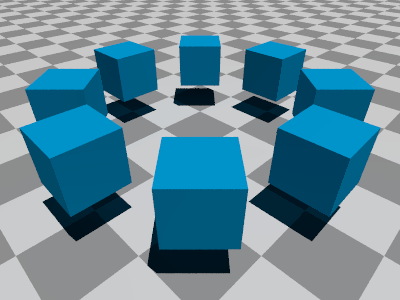

In the following examples, S is a sphere primitive with
radius 0.5, and C is a cube of length 0.4.
N_roots(N, R, Ob):
Constructs a union containing copies of
object Ob at each Nth root of unity in the xz-plane,
at distance R from 0.
N_roots(8,2,S)
N_roots_SR(N, R, Ob, Sc, Rt):
Same as N_roots(N, R,
Ob), with the Kth copy of Ob scaled by
1+Sc*K and rotated by Rt*K for each 0,...,K.

N_roots_SR(8, 2, C, 0, 45*y)
Row(Ob, Start, N, Space):
Constructs a union containing N copies of object Ob
in a row, starting at point Start and spaced apart by vector
Space.
Row(S, <-3, 0, 2>, 4, <2, 0, 0>)Row(S, <-3, 0, 2>, 4, <2, 0.5, 1>)
Row_SR(Ob, Start, N, Space, R, S):
Same as (Ob, Start, N,
Space) but with the Kth copy of Ob scaled by
1+S*K and rotated by R*K for each 0,...,K.
Row_SR(C, <-3, 0, 2>, 4, <2, 0.5, 1>, <45,45,45>, 0.15)